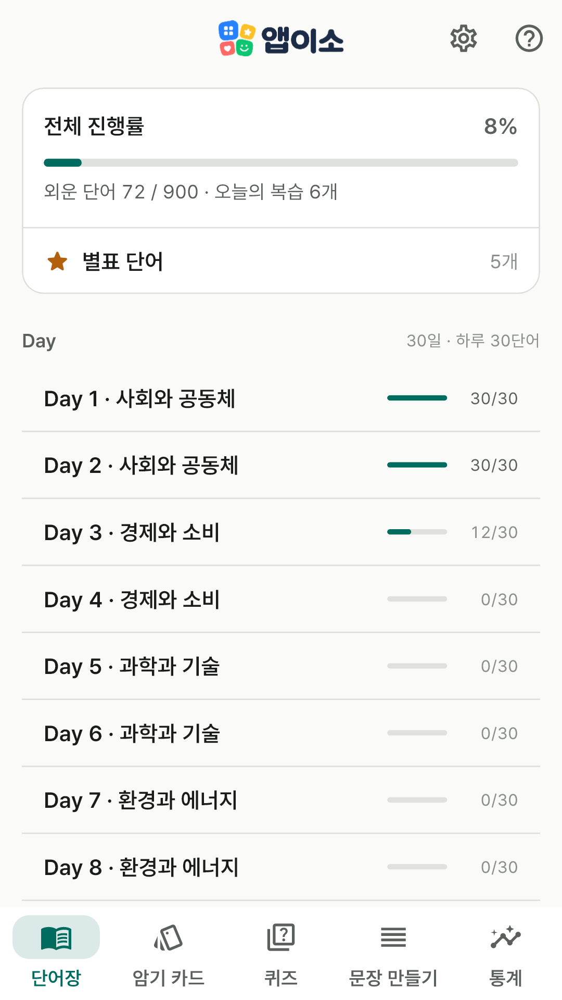
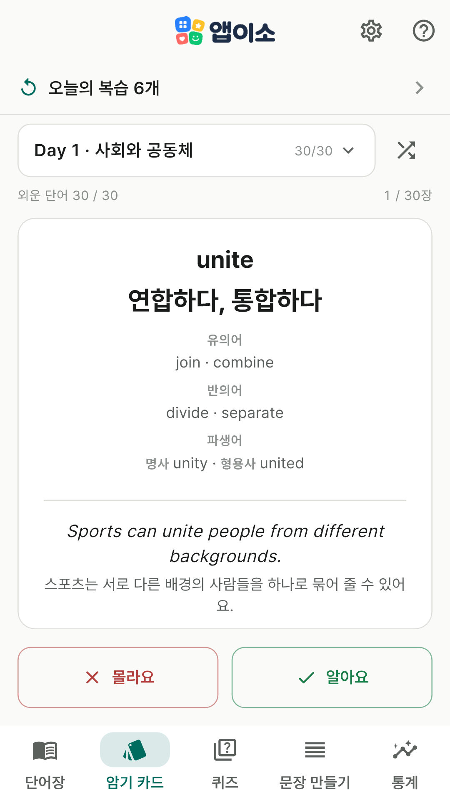
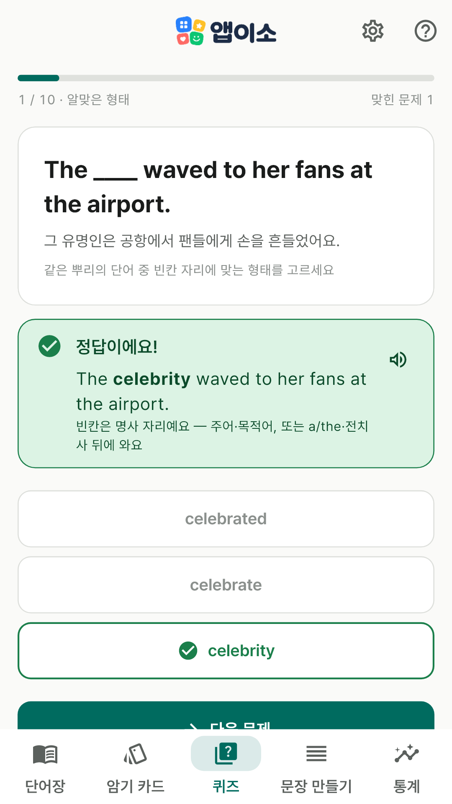
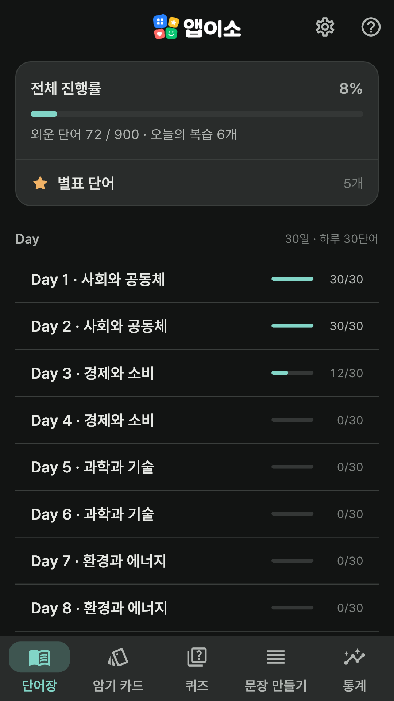

광고 없이 완전 무료입니다. 결제도, 로그인도, 계정도 없습니다.
학습 기록은 휴대폰에 저장되고(본인 구글 계정 백업에 포함될 수 있어요),
서버로 보내지 않습니다 — 서버 자체가 없거든요.
앱이소 영단어 초급의 다음 단계이자 형제 앱입니다.
이런 걸 할 수 있어요
단어장 — 중3~고1 수능 기초 영단어 900개가 주제별로 Day 1~30에 나뉘어 있어요.
단어마다 뜻 2~3개, 유의어·반의어, 파생어(같은 뿌리의 명사·동사·형용사·부사 형태), 함께 쓰는 전치사,
예문과 번역이 있어요.
암기 카드 — 카드를 탭해 앞뒤(단어 ↔ 뜻·상세·예문)를 뒤집고,
'알아요' / '몰라요'로 진도를 기록해요. 스피커를 누르면 발음도 들을 수 있어요.
오늘의 복습 — 몰라요를 눌렀거나 퀴즈에서 틀린 단어는 다음 날 다시 나와요.
맞힐 때마다 3일·7일·14일·30일로 간격이 길어지고, 다섯 번을 다 맞히면 외운 단어가 돼요.
퀴즈 7가지 — 뜻 고르기·유의어·반의어 / 빈칸 채우기·알맞은 형태·전치사 채우기 /
끝 채우기·철자 쓰기. 알맞은 형태 고르기는 success·succeed·successful·successfully 중 문장의 빈칸에
맞는 것을 고르고, 답하면 "빈칸은 형용사 자리예요"처럼 이유를 알려 줘요.
문장 만들기 — 흩어진 영어 단어 카드를 순서대로 눌러 문장을 완성해요.
통계 — 오늘/주간/월간/전체 학습량, 연속 학습일, 복습 대기·졸업 단어 수를 한눈에 봐요.
화면

단어장

암기 카드

퀴즈

다크 모드
개인정보
이 앱은 개인정보를 수집하지 않습니다. 학습 기록은 휴대폰에 저장되고 개발자에게
보내지 않습니다(안드로이드 자동 백업을 켜 두셨다면 본인 구글 계정 백업에 담길 수 있어요). 자세한 내용은
개인정보처리방침을 확인해 주세요.
문의
버그 제보나 넣었으면 하는 기능이 있으면
appisoLabs@gmail.com 으로 알려주세요.
어떤 버전에서 생긴 일인지(옵션 화면에 적혀 있어요) 같이 적어주시면 도움이 됩니다.